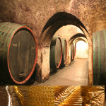

Cramele LOGOS

Cramele "Logos" si Hotelul-hostel "Doua Salcii" va asteapta in Aiud intr-o zona retrasa si linistita cu putine constructii in jur (ieşirea către DJ 107M: Rîmetea - Buru). Hostelul vă pune la dispoziţie o sală de 350-400 de locuri pentru diferite evenimente, o sală de mese de 40 de locuri şi parcare gratuită şi păzită. Hostelul Doua Salcii va invita sa petreceti clipe de neuitat si, de asemenea, sa degustati vinul "PLEBANOS" la crama noastra.